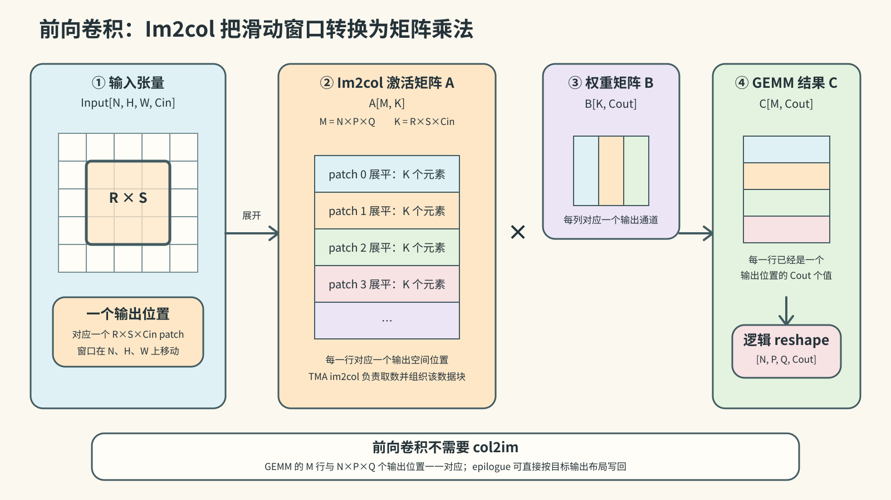
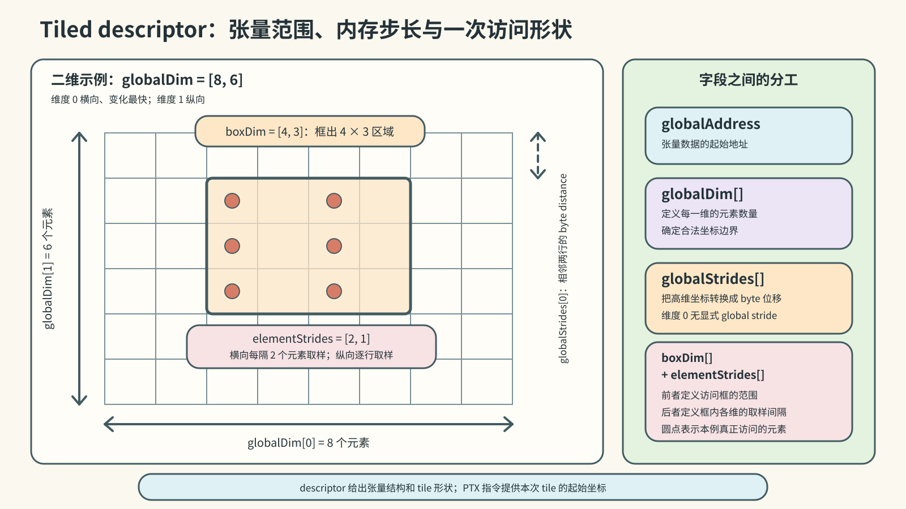
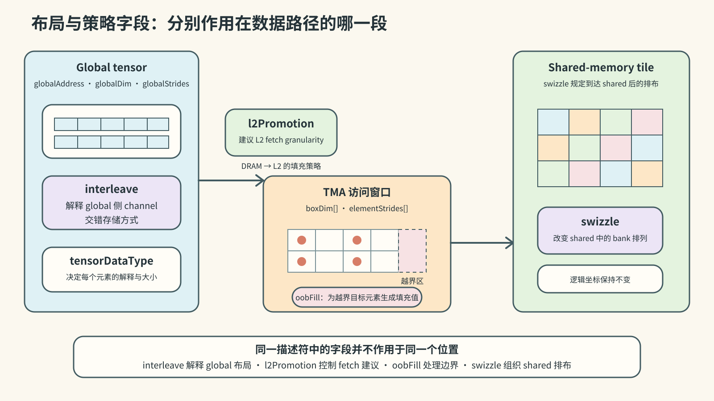
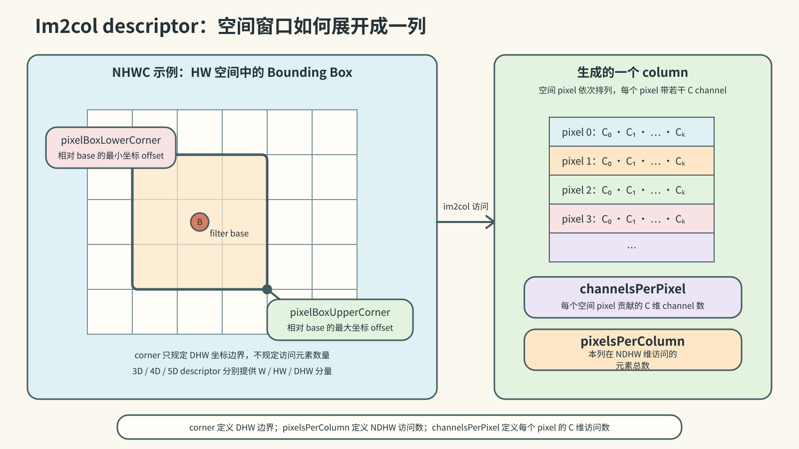
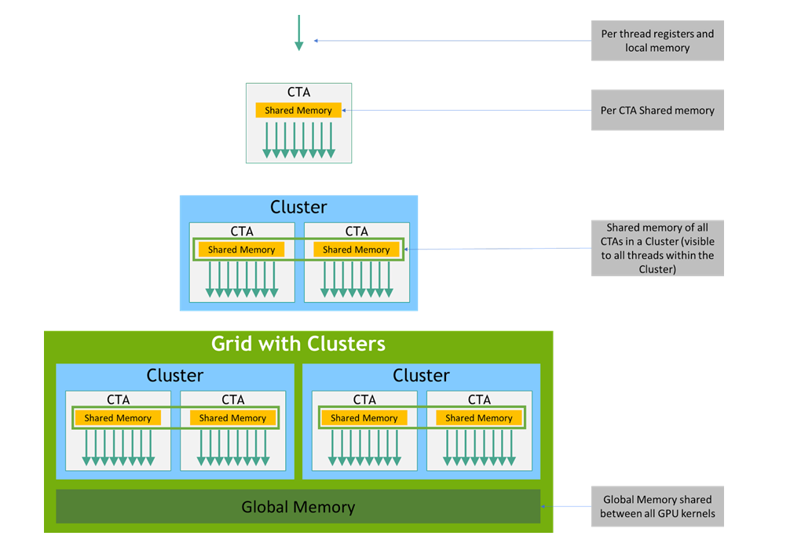
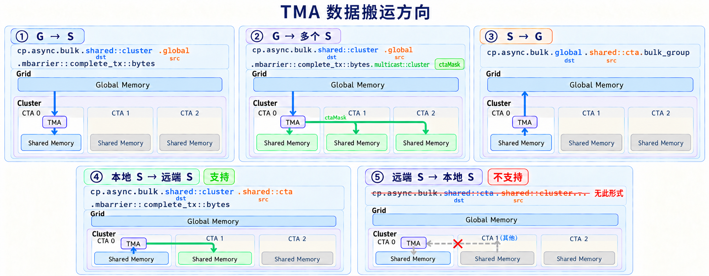
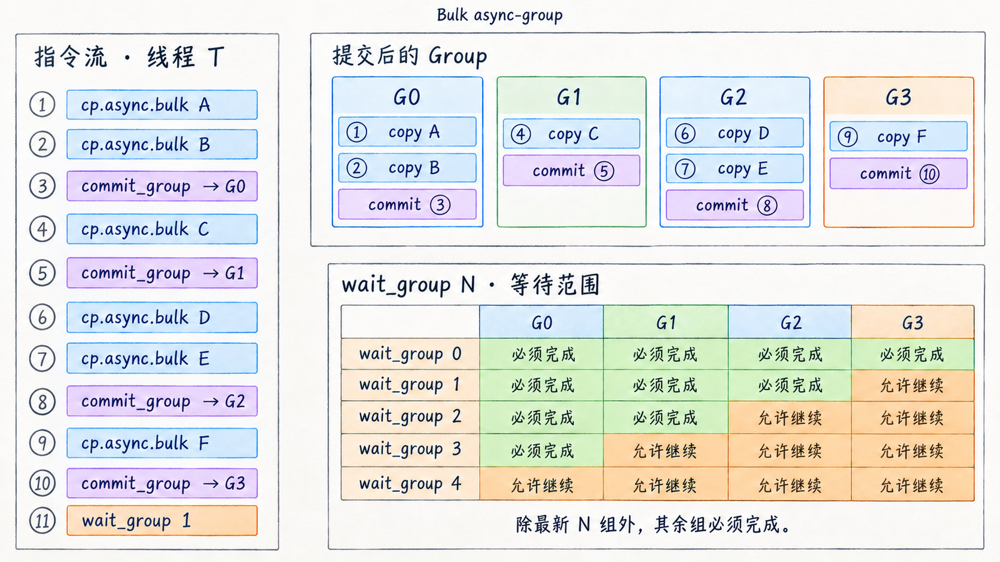
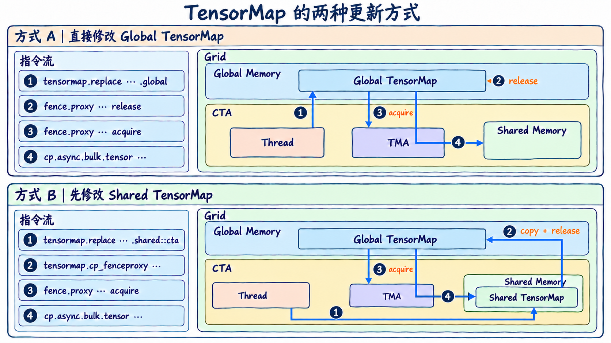

第二章：Hopper 第一代 TMA 的 PTX 设计
本文是 NVIDIA TMA 调研系列 第二章，聚焦 Hopper/PTX 8.0–8.3。上一篇：NVIDIA 产品迭代与 TMA 概述；引用编号见参考资料索引。Blackwell PTX 8.6–8.8 与 Rubin PTX 9.4 的演进将由后续独立文章展开。
范围：Hopper / Compute Capability 9.0；以 PTX ISA 8.0 首发接口为基线，补充 PTX 8.3 的 Hopper descriptor 修改与 proxy 指令
资料回指：参考资料索引
本章只整理两类对象：TMA 描述符和TMA 相关 PTX 指令。描述符部分先给出完整对象边界和字段表，再逐字段解释；指令部分先给出指令全集，再按统一格式解释每条指令的修饰符和操作数。
2.1 TMA 描述符
2.1.1 对象与字段总表
Hopper 对外使用的 tensor map 类型是 CUtensorMap。PTX 8.0 将 tensor map 定义为 128 B 的 opaque object；CUDA 12.0 Driver API 使用 16 个 64-bit qword 承载该对象，并要求对象地址至少按 64 B 对齐 [S027][S028]：
#define CU_TENSOR_MAP_NUM_QWORDS 16
typedef struct CUtensorMap_st {
cuuint64_t opaque[CU_TENSOR_MAP_NUM_QWORDS];
} CUtensorMap;PTX 不定义其内部字段布局。下面只列 CUDA Driver API 对外提供的逻辑字段。
Tiled descriptor
cuTensorMapEncodeTiled 接受以下字段 [S028]：
| 字段 | 数量 | API 输入类型 | Hopper 合法范围或单位 |
|---|---|---|---|
tensorDataType |
1 | enum | 13 种数据类型，枚举值 0–12 |
tensorRank |
1 | uint32_t |
1–5 |
globalAddress |
1 | pointer | 无 interleave 或 16B interleave 时至少 16 B 对齐；32B interleave 时至少 32 B 对齐 |
globalDim[i] |
rank | uint64_t[] |
每维 1–2³² 个元素 |
globalStrides[i] |
rank − 1 | uint64_t[] |
byte；16 B 的倍数且 < 2⁴⁰；32B interleave 时为 32 B 的倍数 |
boxDim[i] |
rank | uint32_t[] |
每维 1–256 个元素 |
elementStrides[i] |
rank | uint32_t[] |
每维 1–8 个元素 |
interleave |
1 | enum | none、16B、32B |
swizzle |
1 | enum | none、32B、64B、128B |
l2Promotion |
1 | enum | none、64B、128B、256B |
oobFill |
1 | enum | zero、OOB-NaN |
Im2col descriptor
Im2col descriptor 与 tiled descriptor 共用 tensorDataType、tensorRank、globalAddress、globalDim、globalStrides、elementStrides、interleave、swizzle、l2Promotion 和 oobFill，并以以下字段替代 boxDim[] [S027][S028]：
| 字段 | 数量 | API 输入类型 | Hopper 合法范围 |
|---|---|---|---|
pixelBoxLowerCorner[] |
rank − 2 | int32_t[] |
3D：1 个 16-bit signed 值；4D：2 个 8-bit signed 值；5D：3 个 4-bit signed 值 |
pixelBoxUpperCorner[] |
rank − 2 | int32_t[] |
与 lower corner 相同 |
channelsPerPixel |
1 | uint32_t |
≤ 256；CUDA 12.0 文档未另列非零下限 |
pixelsPerColumn |
1 | uint32_t |
≤ 1024；CUDA 12.0 文档未另列非零下限 |
在前向卷积中，可以把每个输出位置对应的 R × S × Cin 输入窗口展平为一行。全部 N × P × Q 个输出位置组成激活矩阵 A[N×P×Q, R×S×Cin]；卷积权重组成矩阵 B[R×S×Cin, Cout]。二者相乘得到 C[N×P×Q, Cout]，其每一行已经对应一个输出位置，只需逻辑上恢复为 Output[N, P, Q, Cout]，或由 GEMM epilogue 直接按该布局写回，不需要 col2im。下图采用常见的 A[M,K] × B[K,Cout] 表达；实际 shared-memory 排列可以转置或 swizzle。

2.1.2 字段逐项解释
tensorDataType
描述 global tensor 元素如何解释，也决定 TMA load、store 和 reduce 的元素语义。Hopper/CUDA 12.0 的枚举为：
| API 值 | 类型 | 元素大小或语义 |
|---|---|---|
| 0 | UINT8 |
1 B |
| 1 | UINT16 |
2 B |
| 2 | UINT32 |
4 B |
| 3 | INT32 |
4 B |
| 4 | UINT64 |
8 B |
| 5 | INT64 |
8 B |
| 6 | FLOAT16 |
2 B |
| 7 | FLOAT32 |
4 B |
| 8 | FLOAT64 |
8 B |
| 9 | BFLOAT16 |
2 B |
| 10 | FLOAT32_FTZ |
4 B；global reduction 使用 FTZ 语义 |
| 11 | TFLOAT32 |
global 按 FP32，shared 侧按 TF32 表达 |
| 12 | TFLOAT32_FTZ |
TF32 搬运并带 global reduction FTZ 语义 |
PTX tensormap.replace.elemtype 使用另一套立即数映射，不应直接套用 Driver API 的枚举值；该映射在 2.2.11 单独列出 [S031]。
tensorRank
描述 global tensor 的维数，Hopper 支持 1D–5D。CUDA API 输入实际 rank；tensormap.replace.tile.rank 则输入 rank - 1，即用 0–4 表示 1D–5D。它与 PTX 指令上的 .1d–.5d 是两个相互约束的表达：descriptor 保存 tensor 结构，指令修饰符决定本次操作采用的坐标向量长度和指令变体 [S027][S031]。
globalAddress
global tensor 的起始地址。无 interleave 或 16B interleave 时至少 16 B 对齐；32B interleave 时至少 32 B 对齐 [S028]。
globalDim[i]
第 i 维的全局元素数量，单位是元素。每维必须非零且不超过 2³²。维度 0 是最内层、变化最快的维度；PTX 指令的 tensorCoords[i] 使用同一维序 [S028]。
globalStrides[i]
从一个高维切片移动到下一个切片所需的 byte distance，单位是字节。rank 为 R 时只需要 R-1 个 stride，因为维度 0 的相邻元素距离由数据类型和 interleave 规则确定。Hopper 要求 stride 为 16 B 的倍数且小于 2⁴⁰；32B interleave 时还必须是 32 B 的倍数 [S028]。
boxDim[i]
一次 TMA tiled 操作在第 i 维覆盖的 bounding-box 范围，单位是元素，每维为 1–256。它不是 global tensor 的 shape，也不是 shared-memory byte stride。无 interleave 时，boxDim[0] × elementSize 必须是 16 B 的倍数 [S027][S028]。
elementStrides[i]
bounding box 在第 i 维遍历 global tensor 时的元素步长，单位是元素，范围为 1–8。值为 1 表示逐元素遍历；值大于 1 表示跳跃访问。实际访问元素数为 ceil(boxDim[i] / elementStrides[i])。无 interleave 时，TMA 不支持维度 0 的 stride，因此 elementStrides[0] 被忽略 [S027][S028]。

interleave
说明 global-memory tensor 的物理 channel interleave 布局。Hopper 支持 none、16B 和 32B。interleave 不是 shared-memory swizzle：前者解释 global 侧的交错存储，后者决定数据到达 shared memory 后的排布。启用 interleave 时 rank 至少为 3；32B interleave 还提高 global address 和 global stride 的对齐要求 [S027][S028]。
swizzle
指定数据写入或读出 shared memory 时使用的 bank swizzle，Hopper 支持 none、32B、64B 和 128B。无 interleave 时，最内层 bounding-box byte width 不得超过所选 swizzle span；32B interleave 预期与 32B swizzle 配合。swizzle 不改变 global tensor 的逻辑坐标，而改变 shared-memory 线性数据的物理排列 [S027][S028]。
l2Promotion
指定从 DRAM 填充到 L2 时建议采用的 fetch granularity：none、64B、128B 或 256B。它是缓存填充策略字段，不改变 tensor 的逻辑 shape、坐标或 copy 的正确性语义 [S028]。
oobFill
指定 bounding box 越过 global tensor 边界时生成的目标值。Hopper 支持 zero fill 和特殊 OOB-NaN fill；后者仅适用于浮点数据类型。该字段使边缘 tile 的越界元素可以由 TMA 生成，不要求指令为每个元素携带 predicate [S027][S028]。

Im2col 专属字段
pixelBoxLowerCorner[] 与 pixelBoxUpperCorner[] 分别给出 DHW 各维 filter box 的下角和上角相对 offset。rank 为 3、4、5 时分别有 1、2、3 个分量；随着分量数增加，每项可用的有符号取值宽度依次为 16、8、4 bit。
channelsPerPixel 表示每个 pixel 沿 C 维访问的元素数，CUDA 12.0 给出的上限为 256；pixelsPerColumn 表示一个 column 沿 NDHW 维访问的元素总数，上限为 1024。corner 字段只规定 DHW 空间中的坐标边界，不直接规定访问元素数。该版文档没有为这两个字段另列非零下限 [S027][S028]。
Im2col descriptor 只支持 3D、4D 和 5D，分别解释为 NWC、NHWC 和 NDHWC [S027]。

2.2 TMA 相关 PTX 指令
2.2.1 指令全集
PTX 8.0 为 sm_90 建立了两条相邻但不同的路径：不使用 tensor map 的一维 bulk path，以及使用 tensor map 的 tensor path。为了完整呈现 Hopper TMA 的 PTX 设计，下表同时列出二者 [S027]。
| 指令 | 使用 tensor map | 功能 | 首发 PTX / target |
|---|---|---|---|
prefetch.{const\|param}.tensormap |
是 | 预取 descriptor 本身 | PTX 8.0 / sm_90 |
cp.async.bulk |
否 | 一维连续 bulk copy | PTX 8.0 / sm_90 |
cp.reduce.async.bulk |
否 | 一维连续 bulk copy + reduction | PTX 8.0 / sm_90 |
cp.async.bulk.prefetch |
否 | 一维连续区域预取到 L2 | PTX 8.0 / sm_90 |
cp.async.bulk.tensor |
是 | 1D–5D tensor copy | PTX 8.0 / sm_90 |
cp.reduce.async.bulk.tensor |
是 | tensor store + reduction | PTX 8.0 / sm_90 |
cp.async.bulk.prefetch.tensor |
是 | tensor region 预取到 L2 | PTX 8.0 / sm_90 |
cp.async.bulk.commit_group |
间接 | 提交当前线程的 bulk-group 操作 | PTX 8.0 / sm_90 |
cp.async.bulk.wait_group |
间接 | 等待 bulk async-groups | PTX 8.0 / sm_90 |
tensormap.replace |
修改 descriptor | 修改 tiled descriptor 字段 | PTX 8.3 / sm_90a |
tensormap.cp_fenceproxy |
descriptor copy + proxy release | 将 shared 中修改后的 128 B descriptor 复制到 global 并发布给 tensormap proxy | PTX 8.3 / sm_90 |
fence.proxy.tensormap::generic |
descriptor proxy fence | 在 generic proxy 与 tensormap proxy 之间建立定向顺序 | PTX 8.3 / sm_90 |
2.2.2 prefetch.tensormap
prefetch.const.tensormap [a];
prefetch.param.tensormap [a];| 字段 | 取值或类型 | 含义 |
|---|---|---|
prefetch |
opcode | 发出缓存预取提示，不产生程序可见的 tensor 数据结果 |
.const / .param |
descriptor state space | Hopper PTX 8.0 tensor map 可位于 constant space 或 entry parameter space |
.tensormap |
object class | 指明预取对象是供后续 tensor bulk instruction 使用的 tensor map |
[a] |
descriptor address | tensor-map object 的地址 |
这条指令预取的是 descriptor，不是 descriptor 所描述的 tensor data。tensor data 的 L2 预取由 cp.async.bulk.prefetch.tensor 表达 [S027]。
2.2.3 cp.async.bulk
// global -> shared::cluster；multicast 和 cache hint 均可选
cp.async.bulk.shared::cluster.global.mbarrier::complete_tx::bytes{.multicast::cluster}{.L2::cache_hint}
[dstMem], [srcMem], size, [mbar] {, ctaMask} {, cache-policy};
// shared::cta -> shared::cluster，目标必须是另一 CTA
cp.async.bulk.shared::cluster.shared::cta.mbarrier::complete_tx::bytes
[dstMem], [srcMem], size, [mbar];
// shared::cta -> global
cp.async.bulk.global.shared::cta.bulk_group{.L2::cache_hint}
[dstMem], [srcMem], size {, cache-policy};| 字段 | 取值或类型 | 含义与限制 |
|---|---|---|
.dst |
.shared::cluster / .global |
目标 state space |
.src |
.global / .shared::cta |
源 state space |
.mbarrier::complete_tx::bytes |
completion modifier | copy 完成时按实际 byte count 更新 [mbar]；用于 global→shared 和 CTA→remote CTA shared |
.bulk_group |
completion modifier | 选择发起线程私有的 bulk async-group 完成机制；随后由同一线程执行 commit_group 和 wait_group |
.multicast::cluster |
optional modifier | global 数据写入 ctaMask 选中的多个 CTA 的相同 shared offset，并向对应 mbarrier 发送完成通知 |
.L2::cache_hint |
optional modifier | 表示末尾存在 64-bit cache-policy operand |
[dstMem] |
address | 目标地址；shared→shared 时必须映射到 cluster 中另一 CTA |
[srcMem] |
address | 源地址 |
size |
32-bit byte count | 必须为 16 B 的倍数 |
[mbar] |
shared-memory mbarrier address | mbarrier completion object |
ctaMask |
16 bit | bit i 对应 cluster 中 CTA rank i |
cache-policy |
64 bit | cache eviction policy hint，不改变内存一致性语义 |
.dst 与 .src
指令名中的 .dst.src 按“目标在前、源在后”排列，数据实际从 .src 搬到 .dst。
.shared::cta 表示执行当前指令的 CTA 自己的 shared-memory 地址窗口。.shared::cluster 表示当前 CTA cluster 内任意 CTA 的 shared-memory 地址窗口，可以指向本 CTA，也可以指向另一个 CTA。它不是一块独立的 cluster 级物理存储；底层仍是各 CTA 所在 SM 的 shared memory，只是增加了 cluster 范围的寻址方式 [S027][S032]。

图源：NVIDIA PTX ISA，Memory Hierarchy [S032]。
.dst 和 .src 的表中取值不能任意组合。Hopper PTX 8.0 支持以下三种方向：
.dst.src 组合 |
实际方向 | 地址含义 |
|---|---|---|
.shared::cluster.global |
global → shared | dstMem 指向 cluster 内某个 CTA 的 shared memory，srcMem 指向 global memory |
.shared::cluster.shared::cta |
shared → shared | srcMem 位于当前 CTA 的 shared memory；dstMem 必须指向 cluster 内另一个 CTA 的 shared memory |
.global.shared::cta |
shared → global | srcMem 位于当前 CTA 的 shared memory，dstMem 指向 global memory |
.multicast::cluster 只适用于 .shared::cluster.global 方向。普通形式由 dstMem 指定一个 shared-memory 目标；加入 multicast 后，ctaMask 选择 cluster 内的多个目标 CTA，global source data 会写入这些 CTA 各自 shared memory 中与 dstMem 相同的 CTA-relative offset。对应的完成通知也发送到各目标 CTA 中与 mbar 相同的相对位置。
ctaMask 是 16-bit 位掩码，第 i 位对应 %cluster_ctarank == i 的 CTA；置 1 表示该 CTA 是本次 multicast 的目标。掩码宽度提供可表示的 CTA rank 范围，本身不定义当前 cluster 实际包含多少个 CTA [S027]。
下图将三种合法的 .dst.src 组合展开为四种数据路径，并补充一个不受支持的反向 shared-memory 路径。每个场景上方保留实际 PTX 形式，其中紧跟 cp.async.bulk 的两个 state-space modifier 依次是 .dst 和 .src。

图中的④与⑤需要成对理解：Hopper 支持当前 CTA 的 .shared::cta 作为 source，把数据写入同一 cluster 中另一个 CTA 的 .shared::cluster；不支持把远端 .shared::cluster 作为 source，再由 TMA 拉回当前 CTA 的 .shared::cta。因此 shared→shared 不是方向对称的能力。
srcMem、dstMem 必须 16 B 对齐，访问区间不得越出相应 state space。该指令不使用 tensor map，不包含多维 shape、stride、swizzle 或 OOB 处理 [S027]。
Bulk async-group
.bulk_group 表示该异步操作采用 bulk async-group 管理完成状态。它不是一个由程序显式创建或命名的共享对象，而是当前线程按指令顺序维护的分组机制：线程先发出若干采用 .bulk_group completion 的 bulk async 操作，再执行 cp.async.bulk.commit_group，把这些尚未提交的操作封装成一个新 group [S027]。
下图左侧给出一个线程的指令流。①、②先发出两次 copy，③再把它们提交为 G0；④由⑤提交为 G1；⑥、⑦由⑧提交为 G2；⑨由⑩提交为 G3。也就是说，commit_group 是一组操作的结束边界，不是该组中的第一条 copy。图中的 G0–G3 只是为了说明提交先后而使用的名称，PTX 指令不会返回可供程序引用的 group ID。

右下部分表示：假设 G0–G3 已按顺序提交，cp.async.bulk.wait_group N 允许最新的 N 个 group 仍未完成，但要求更早的 group 全部完成。因此，wait_group 0 等待四组全部完成；wait_group 1 只允许最新的 G3 尚未完成；wait_group 2 允许 G2、G3 尚未完成，依此类推。图中的“允许继续”仅表示这些组不在本次等待的强制完成范围内，并不表示它们一定仍在执行 [S027]。
分组和等待均以执行指令的线程为作用域：一个线程的 commit_group 只提交该线程此前尚未提交的 bulk async 操作，后续也由同一线程用 wait_group 约束这些 group。组内操作被共同纳入完成判断，但组内彼此不因此获得额外的 memory ordering；.read 形式的较弱等待语义见 2.2.10。
2.2.4 cp.reduce.async.bulk
// shared::cta -> shared::cluster
cp.reduce.async.bulk.shared::cluster.shared::cta.mbarrier::complete_tx::bytes.redOp.type
[dstMem], [srcMem], size, [mbar];
// shared::cta -> global：一般形式
cp.reduce.async.bulk.global.shared::cta.bulk_group{.L2::cache_hint}.redOp.type
[dstMem], [srcMem], size {, cache-policy};
// shared::cta -> global：FP16/BF16 add 的 no-FTZ 形式
cp.reduce.async.bulk.global.shared::cta.bulk_group{.L2::cache_hint}.add.noftz.type
[dstMem], [srcMem], size {, cache-policy};cp.reduce.async.bulk 沿用 cp.async.bulk 的地址、大小、完成机制和 L2 cache hint 表达：[dstMem]、[srcMem]、size、[mbar]、.L2::cache_hint 与 cache-policy 的基本含义不变；shared target 仍使用 .mbarrier::complete_tx::bytes，global target 仍使用 .bulk_group。下面只整理相对 cp.async.bulk 新增、删除或发生变化的部分。
| 字段或形式 | 取值 | 变化类型 | 含义或改动 |
|---|---|---|---|
.dst/.src |
.shared::cluster.shared::cta / .global.shared::cta |
改动 | source 固定为当前 CTA 的 .shared::cta；只保留 shared→remote shared 和 shared→global，不再支持 global→shared |
.redOp |
.add、.min、.max、.inc、.dec、.and、.or、.xor |
新增 | 指定 source element 与对应 destination element 之间执行的 inline reduction |
.type |
按 destination 和 .redOp 受限 |
新增 | 定义每个 reduction element 的类型 |
.noftz |
FP16/BF16 add 的规定形式 | 新增 | 保留 subnormal input/result，不执行 flush-to-zero |
.multicast::cluster / ctaMask |
— | 删除 | cp.reduce.async.bulk 不提供 multicast 形式 |
.type 的合法集合同时取决于 destination 和 .redOp。global destination 支持浮点类型和更多 64-bit 类型；shared::cluster destination 的类型集合更窄。完整组合如下 [S027]：
.redOp |
.global destination 的 .type |
.shared::cluster destination 的 .type |
|---|---|---|
.add |
.u32、.s32、.u64、.f32、.f64、.f16、.bf16 |
.u32、.s32、.u64 |
.min / .max |
.u32、.s32、.u64、.s64、.f16、.bf16 |
.u32、.s32 |
.inc / .dec |
.u32 |
.u32 |
.and / .or / .xor |
.b32、.b64 |
.b32 |
2.2.5 cp.async.bulk.prefetch
cp.async.bulk.prefetch.L2.global{.L2::cache_hint}
[srcMem], size {, cache-policy};| 字段 | 取值或类型 | 含义 |
|---|---|---|
.L2 |
fixed、必选 | 指令只支持将数据预取到 L2；不存在省略 .L2 或改为 .L1 的形式 |
.global |
fixed、必选 | source 固定为 global memory |
.L2::cache_hint |
optional | 表示指令末尾提供 cache-policy；不改变预取目标仍为 L2 |
[srcMem] |
global address | 待预取区域的起始地址，必须 16 B 对齐 |
size |
32-bit byte count | 待预取的 byte 数，必须为 16 B 的倍数 |
cache-policy |
opaque 64-bit value | 由通用 cache-policy 机制提供的 L2 eviction hint；仅在指定 .L2::cache_hint 时出现 |
该指令是 hint：系统“可以”发起预取；它不提供 shared-memory destination，也不产生供程序等待的数据完成对象 [S027]。
2.2.6 cp.async.bulk.tensor
// global -> shared::cluster
cp.async.bulk.tensor.dim.shared::cluster.global{.load_mode}.mbarrier::complete_tx::bytes{.multicast::cluster}{.L2::cache_hint}
[dstMem], [tensorMap, tensorCoords], [mbar]
{, im2colOffsets} {, ctaMask} {, cache-policy};
// shared::cta -> global
cp.async.bulk.tensor.dim.global.shared::cta{.load_mode}.bulk_group{.L2::cache_hint}
[tensorMap, tensorCoords], [srcMem] {, cache-policy};cp.async.bulk.tensor 沿用 2.2.3 的完成机制、multicast 和 L2 cache hint 表达：load 仍使用 .mbarrier::complete_tx::bytes，store 仍使用 .bulk_group；[mbar]、.multicast::cluster、ctaMask、.L2::cache_hint 与 cache-policy 的基本含义不变。shared 侧的 [dstMem] / [srcMem] 也仍是线性 shared-memory 地址。下面只整理 tensor 形式新增、删除或发生变化的部分。
| 字段或形式 | 取值或类型 | 变化类型 | 含义或改动 |
|---|---|---|---|
.dim |
.1d–.5d |
新增 | 指定本次 tensor operation 的维度，也决定 tensorCoords 长度 |
.dst/.src |
load：.shared::cluster.global；store：.global.shared::cta |
改动 | 只保留 global→shared 和 shared→global，不再支持 shared→shared |
.load_mode |
load：.tile / .im2col；store：.tile / .im2col_no_offs |
新增 | 指定 tensor traversal mode；省略时默认为 .tile |
tensorMap |
generic descriptor address | 新增 | PTX 8.0 中指向 .param 或 .const 中的 128-B tensor map，由其提供 global base address、shape、stride、元素类型和布局策略 |
tensorCoords |
.s32 vector，长度=dim |
新增 | load 时给出 bounding box 在 global tensor 中的起始坐标；store 时给出写回坐标 |
im2colOffsets |
.u16 vector，长度=dim-2 |
新增 | 仅 .im2col load 使用，动态偏移 W/H/D filter base |
global 侧 [srcMem] / [dstMem] |
— | 删除 | global 位置改由 tensorMap 和 tensorCoords 表达 |
size |
— | 删除 | 不再显式给出 byte count；传输范围由 descriptor、.dim、.load_mode 和坐标共同确定 |
因此，这一指令的核心变化不是完成机制，而是 global 侧从“线性地址 + byte count”改为“tensor descriptor + tensor coordinates”。tile 的范围和静态布局来自 descriptor，本次动态位置来自 tensorCoords，im2col load 还可以由 im2colOffsets 增加动态 filter offset [S027]。
2.2.7 cp.reduce.async.bulk.tensor
cp.reduce.async.bulk.tensor.dim.global.shared::cta.redOp{.load_mode}.bulk_group{.L2::cache_hint}
[tensorMap, tensorCoords], [srcMem] {, cache-policy};cp.reduce.async.bulk.tensor 可以看作在 2.2.6 的 tensor store 上加入 2.2.4 的 reduction 语义。它沿用 tensor store 的 .dim、.global.shared::cta、.load_mode、.bulk_group、.L2::cache_hint、tensorMap、tensorCoords、[srcMem] 和 cache-policy。
相对 2.2.6 的 cp.async.bulk.tensor，需要单独说明的变化如下：
| 字段或形式 | 取值或类型 | 变化类型 | 相对 2.2.6 的变化 |
|---|---|---|---|
| 数据方向 | .global.shared::cta |
收窄 | 只保留 shared memory → global memory，不支持 global memory → shared memory |
.redOp |
.add/.min/.max/.inc/.dec/.and/.or/.xor |
新增 | 在 tensor store 的基础上指定写入 global memory 时执行的 reduction 操作 |
| 元素类型限制 | 取决于 .redOp |
新增约束 | 元素类型仍由 tensorMap 指定，但必须与 .redOp 构成合法组合 |
.redOp 的种类和操作含义与 2.2.4 相同，但元素类型不写在 opcode 中，而由 tensorMap 指定。相对 2.2.4 的非 tensor reduction，合法类型组合变化如下：
.redOp |
tensorMap 元素类型 |
相对 2.2.4 的变化 |
|---|---|---|
.add |
.u32/.s32/.u64/.f32/.f16/.bf16 |
不再支持 .f64 |
.min/.max |
.u32/.s32/.u64/.s64/.f16/.bf16 |
不变 |
.inc/.dec |
.u32 |
不变 |
.and/.or/.xor |
.b32/.b64 |
不变 |
因此，这条指令的 tensor 寻址方式来自 2.2.6，reduction 操作来自 2.2.4；元素类型则由 tensorMap 描述符提供 [S027]。
2.2.8 cp.async.bulk.prefetch.tensor
cp.async.bulk.prefetch.tensor.dim.L2.global{.load_mode}{.L2::cache_hint}
[tensorMap, tensorCoords] {, im2colOffsets} {, cache-policy};cp.async.bulk.prefetch.tensor 是 2.2.5 cp.async.bulk.prefetch 的 tensor 寻址形式：两者都只是向系统发出从 global memory 预取到 L2 的非阻塞 hint，固定使用 .L2.global，并沿用可选的 .L2::cache_hint 与 cache-policy。tensor 区域的表达方式则与 2.2.6 的 global tensor source 相同。
相对 2.2.5，变化如下：
| 字段或操作数 | 取值或类型 | 变化类型 | 相对 2.2.5 的变化 |
|---|---|---|---|
.dim |
.1d–.5d |
新增 | 指定 global tensor 的维度 |
.load_mode |
.tile/.im2col |
新增 | 指定以普通 tile 或 im2col 方式解释预取区域 |
[srcMem], size |
— | 替换 | 不再用线性起始地址和字节数直接描述区域 |
[tensorMap, tensorCoords] |
descriptor address + .s32[dim] |
新增 | descriptor 给出 tensor 布局和 box shape，坐标给出预取区域的起点 |
im2colOffsets |
.u16[dim-2] |
条件新增 | 仅 .im2col 使用，提供动态 W/H/D offset |
这里预取的是 descriptor 所描述的 global tensor 数据区域；2.2.2 的 prefetch.tensormap 预取的则是 descriptor 自身 [S027]。
2.2.9 cp.async.bulk.commit_group
cp.async.bulk.commit_group;这条指令没有显式操作数，也不发起数据搬运；它只为当前线程划定一个新的 bulk async-group。被纳入该 group 的操作必须同时满足：
| 条件 | 含义 |
|---|---|
| 由当前线程发起 | bulk async-group 是 per-thread 的，不能提交其他线程发起的操作 |
使用 .bulk_group completion |
使用 mbarrier completion 的操作不属于 bulk async-group |
尚未被此前的 commit_group 提交 |
每个操作只能进入一个 group |
满足条件的此前操作被组成一个新 group；没有待提交操作时，仍会生成一个 trivially complete 的空 group。commit_group 只建立 group 边界，不在组内不同操作之间建立 memory ordering [S027]。
2.2.10 cp.async.bulk.wait_group
cp.async.bulk.wait_group N;
cp.async.bulk.wait_group.read N;wait_group 等待 2.2.9 提交的 per-thread bulk async-group。N 是整数常量：指令返回时，最多允许最新的 N 个 group 仍处于 pending 状态，所有更早的 group 都必须达到该指令要求的完成条件；N=0 因而等待此前提交的全部 group。
| 指令形式 | 对被等待 group 的完成要求 | 返回后能够安全进行的操作 |
|---|---|---|
wait_group N |
source read 完成、destination write 完成，并且这些 write 对执行等待的线程可见 | 可以复用 source，也可以由当前线程消费 destination |
wait_group.read N |
只要求 source read 完成 | 可以提前复用 source；不能据此认为 destination write 已完成或可见 |
这里的 N 表示“最多保留多少个最新 group 未完成”，不是某个 group 的编号 [S027]。
2.2.11 Hopper sm_90a 的 descriptor 修改指令
PTX 8.3 在 Hopper architecture-specific target sm_90a 上增加 tensormap.replace，使 device 代码能够修改已有 tensor map 的指定字段。它只支持 tiled descriptor，不支持 im2col descriptor，也不是执行普通 TMA copy 的必备指令 [S031]。
tensormap.replace.mode.field1{.ss}.b1024.type [addr], new_val;
tensormap.replace.mode.field2{.ss}.b1024.type [addr], ord, new_val;
tensormap.replace.mode.field3{.ss}.b1024.type [addr], new_val;
.mode = { .tile }
.field1 = { .global_address, .rank }
.field2 = { .box_dim, .global_dim, .global_stride, .element_stride }
.field3 = { .elemtype, .interleave_layout, .swizzle_mode, .fill_mode }
.ss = { .global, .shared::cta }
.type = { .b32, .b64 }三种语法形式对应三类 descriptor 字段：
| 字段类别 | 可修改字段 | 操作数形式 | 类型与取值约束 |
|---|---|---|---|
.field1 |
.global_address/.rank |
[addr], new_val |
global_address 使用 .b64；rank 使用 .b32，且 new_val = 实际 rank - 1 |
.field2 |
.box_dim/.global_dim/.global_stride/.element_stride |
[addr], ord, new_val |
global_stride 使用 .b64，其余使用 .b32；ord 指定要修改的维度 |
.field3 |
.elemtype/.interleave_layout/.swizzle_mode/.fill_mode |
[addr], new_val |
使用 .b32，且 new_val 必须是立即数 |
其余公共字段如下：
| 字段 | 含义 |
|---|---|
.tile |
固定的 descriptor mode；Hopper 版本不支持修改 im2col descriptor |
.ss |
descriptor 位于 .global、.shared::cta；省略时使用 generic addressing |
.b1024 |
操作对象是完整的 1024-bit opaque tensor map，即使指令只替换其中一个字段 |
addr |
descriptor 地址 |
ord |
.field2 数组字段的维度序号，必须落在该字段实际元素数内；一般最大为 4，global_stride 的 ord 最大为 rank - 2 |
Hopper 中 .field3 的 new_val 映射为：
.field3 |
new_val 映射 |
|---|---|
.elemtype |
0=u8，1=u16，2=u32，3=s32，4=u64，5=s64，6=f16，7=f32，8=f32.ftz，9=f64，10=bf16，11=tf32，12=tf32.ftz |
.interleave_layout |
0=none，1=16 B，2=32 B |
.swizzle_mode |
0=none，1=32 B，2=64 B，3=128 B |
.fill_mode |
0=zero fill，1=OOB-NaN fill |
PTX 明确说明 .elemtype 的这些数值与 Driver API 的 CUtensorMapDataType 枚举值并不相同。尽管指令只替换一个字段，tensormap.replace 在 memory consistency model 中仍被视为对整个 1024-bit tensor map 的 weak memory operation [S031]。
2.2.12 Descriptor proxy 指令
TMA 通过 tensormap proxy 读取 descriptor，而 tensormap.replace 等普通写入属于 generic proxy。device 代码修改 descriptor 后，必须在两种 proxy 之间建立顺序，才能让后续 TMA 操作读取更新后的内容。PTX 8.3 为此增加了 fence.proxy.tensormap::generic 和 tensormap.cp_fenceproxy；它们要求 sm_90，并不要求 sm_90a [S031]。
// descriptor 已直接写在 global：发布 generic 写入
fence.proxy.tensormap::generic.release.scope;
// descriptor 先在 shared::cta 中修改：复制到 global，并执行 proxy release
tensormap.cp_fenceproxy.global.shared::cta.proxy.tensormap::generic.release.scope.sync.aligned
[dst], [src], 128;
// 消费更新后的 descriptor 前执行 address-scoped proxy acquire
fence.proxy.tensormap::generic.acquire.scope [addr], 128;
.scope = { .cta, .cluster, .gpu, .sys }下图分别展开两种完整的 descriptor 更新方式。方式 A 直接修改 global descriptor，随后执行 proxy release；方式 B 先在 CTA shared memory 中修改 descriptor，再由 tensormap.cp_fenceproxy 将完整的 128 B descriptor 复制到 global memory，并同时执行 proxy release。每个场景左侧是 PTX 指令流，右侧编号相同的标记表示该指令在内存层级中的作用位置。消费端在发起 TMA 前执行 address-scoped acquire，之后 TMA 才通过 tensormap proxy 读取该 global descriptor。

图中的 Thread 表示执行这些指令的线程角色，不表示 PTX 强制要求独立的生产者线程和消费者线程。同一线程可以按 replace → release → acquire → TMA 的顺序完成整个过程，此时 program order 已保证 release 先于 acquire。若 descriptor 由一个线程生产、由另一个线程消费，则还必须通过 barrier、原子通信或 kernel/stream 顺序等已有同步关系，保证生产者的 release 发生在消费者的 acquire 之前；proxy fence 负责跨 proxy 的顺序和可见性，本身不会等待未来才发生的 release。执行同步也不能替代消费端的 tensormap-proxy acquire [S031]。
方式 B 还包含一项执行主体约束：tensormap.replace...shared::cta 可以由单个线程完成，但 tensormap.cp_fenceproxy...sync.aligned 必须由 warp 内所有线程一致执行；只有一个 lane 到达该指令时，行为未定义 [S031]。
两条 descriptor 更新路径的区别如下：
| descriptor 的修改位置 | release 操作 | 实际效果 |
|---|---|---|
| global memory | fence.proxy.tensormap::generic.release.scope |
不复制数据，只把此前对 global descriptor 的 generic 写入发布给 tensormap proxy |
| CTA shared memory | tensormap.cp_fenceproxy...release... |
将完整 128 B descriptor 从 shared::cta 复制到 global，并在复制后执行 proxy release |
随后，消费线程在使用该 global descriptor 发起 TMA 操作前，对相同的 128 B 地址范围执行 fence.proxy.tensormap::generic.acquire.scope [addr], 128。
| 字段 | 含义与限制 |
|---|---|
.tensormap::generic |
建立从 generic proxy 到 tensormap proxy 的单向顺序 |
.release/.acquire |
release 发布 descriptor 写入；address-scoped acquire 使后续 tensormap 访问按该顺序观察该 descriptor |
.scope |
可以直接观察该同步效果的线程范围 |
.global.shared::cta |
fused 指令固定从 CTA shared memory 复制到 global memory |
.sync |
执行线程等待到 warp 内所有线程都执行该指令后再继续 |
.aligned |
warp 内所有线程必须执行相同的指令；若位于分支中，各线程必须对条件作出一致判断 |
[dst]/[src] |
分别是 non-generic global 地址和 non-generic shared::cta 地址 |
size |
tensormap.cp_fenceproxy 的合法值固定为 128 B；对完整 descriptor 执行 acquire 时同样使用 128 B |
这些 proxy 指令只在 descriptor 被 device 代码修改时使用，不是普通 TMA copy 的固定前序步骤 [S031]。
返回系列目录 · 上一篇：NVIDIA 产品迭代与 TMA 概述 · 下一篇：Blackwell 与 Rubin 的 TMA PTX 演进 · 参考资料索引